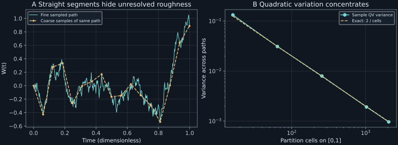

Chapter 12 · Lecture 15
Wiener paths, roughness, and exceptional time statistics
A tracking algorithm estimates velocity by dividing a measured position increment by its sampling interval. For mathematical Brownian motion, refining that interval makes the estimated velocity variance diverge, even while the positions form a continuous path. Meanwhile the sum of squared increments settles toward a finite reproducible limit. The task is to understand these apparently incompatible observations and to distinguish properties of one path from distributions across an ensemble.
The sequence follows NPTEL lecture 15: vector Langevin correlations, mathematical Brownian motion, covariance and path properties, occupation statistics, iterated logarithm, and the OU–Wiener relation. Proofs of finite-mesh relations and the OU time change are supplied here. Deeper path theorems are explicitly cited, not claimed proved by simulation.
12.1 From physical persistence to a mathematical path model L15 3:34
For an isotropic free thermal particle, each Cartesian velocity component follows the OU model of chapter 10. Write $\boldsymbol V_t=(V_{1,t},V_{2,t},V_{3,t})^\mathsf T$ and $\theta=k_BT/m$ for the equilibrium component variance. Independent component Wiener noises and an independent isotropic Maxwell initial velocity give $\mathbb E[V_{i,t}V_{j,0}]=\theta\delta_{ij}e^{-\gamma t}$ for $t\geq0$, where the Kronecker symbol $\delta_{ij}$ is one for equal indices and zero otherwise. Summing diagonal entries gives $\mathbb E[\boldsymbol V_t\cdot\boldsymbol V_0]=3\theta e^{-\gamma t}$.
A uniform magnetic field couples the velocity components through the Lorentz force. Independence of driving noises then does not imply independence of the outputs at different times. The drift matrix rotates velocity as it damps it, while leaving thermal speed variance unchanged. This opening bridge is developed fully in chapter 15. It illustrates why one should solve covariance dynamics rather than infer them from noise labels.
For time scales much longer than momentum relaxation, position is approximated by diffusion. Mathematical Brownian motion idealizes that approximation at every positive time scale. It is therefore a different path model from the time integral of continuous inertial velocity. Their long-time position laws can agree while their short-time differentiability differs. The finite-correlation physical velocity cannot be recovered by differentiating the ideal diffusion path.
12.2 Covariance encodes independent increments L15 18:07
The physical diffusion position is $X_t=x_0+\sqrt{2D}W_t$ for fixed initial position $x_0$ and diffusion coefficient $D\gt0$ of units length squared per time. Its increments have length units and variance $2D(t-s)$. The positive-time transition density is the diffusion kernel $\rho(x,t\mid x_0)=(4\pi Dt)^{-1/2}\exp[-(x-x_0)^2/(4Dt)]$. This kernel specifies transitions in addition to the path-continuity condition; a one-time Gaussian density alone does not define a process.
For $t\geq s$, write $W_t=W_s+(W_t-W_s)$. The second term is independent of $W_s$ with zero mean, so the covariance is $\mathbb E[W_s^2]=s$. Symmetry gives the minimum formula. The increment assertions are part of Definition 12.1, and Gaussian variance depends only on elapsed time. Conversely, for a centered jointly Gaussian process with this covariance, disjoint increments have zero covariance; joint Gaussianity makes them independent. A continuous version is still specified when discussing paths. ∎
The variance of $W_t$ grows with $t$, so the process is not stationary. The increment $W_{t+h}-W_t$ has the same law for every starting time $t$, giving stationary increments. The two statements concern different random variables. In particular, $\mathbb E[(W_t-W_s)^2]=|t-s|$ is an increment variance, not the covariance of two displacements measured from time zero. That covariance is still $\min(t,s)$.
For the tracking algorithm, this distinction determines the variance of differences between estimates. Overlapping increments share noise and are correlated. If intervals of lengths $h_1,h_2$ overlap for duration $a$, their Wiener increments have covariance $a$. Divide by the interval lengths to obtain the covariance of estimated velocities. Treating overlapping increments as independent would understate uncertainty even if their individual histograms were correct.
12.3 Squared increments retain a finite accumulated effect
Fix an observation duration $t_*\gt0$ and divide it into $n$ equal cells of length $h=t_*/n$. Define increments $\Delta_jW=W_{jh}-W_{(j-1)h}$ and the quadratic-variation sum $Q_n=\sum_{j=1}^n(\Delta_jW)^2$. The phrase quadratic variation refers to the limit of these squared-increment sums as the mesh shrinks; it is not ordinary total variation, which uses absolute increments.
Each increment is an independent Gaussian of variance $h$. Its square has mean $h$ and variance $3h^2-h^2=2h^2$, using the Gaussian fourth moment. Independence adds the $n$ square variances, giving $2nh^2=2t_*^2/n$, while the means add to $nh=t_*$. The expected squared error relative to $t_*$ is exactly this variance and tends to zero. ∎
The finite-difference velocity $U_h=(W_{t+h}-W_t)/h$ has variance $1/h$. Its standard deviation grows like $h^{-1/2}$. Small increments have size of order $\sqrt h$, and dividing by $h$ magnifies them. By contrast, squaring those increments gives order $h$, which accumulates to a finite value across order $1/h$ cells. This is the mechanism behind the noise-induced drift in Itô's rule: the quadratic term survives refinement.
For physical position $X=x_0+\sqrt{2D}W$, quadratic variation is $2Dt_*$ and finite-difference velocity variance is $2D/h$. Thus an estimator can extract $D$ from squared increments without assigning a finite instantaneous velocity to the same idealized path. Localization noise and camera integration change this estimator; its exact expectation here assumes direct observations of the diffusion position.
Mean-square convergence is an ensemble statement. It implies convergence in probability, but a statement about every sample path along every possible partition needs stronger hypotheses. Along the dyadic nested sequence $n=2^k$, Chebyshev's bound gives $\Pr(|Q_{2^k}-t_*|\gt\epsilon)\leq2t_*^2/(2^k\epsilon^2)$. The sum over $k$ is finite, so the Borel–Cantelli lemma gives almost-sure convergence along that sequence. Arbitrary path-dependent partitions are not covered by this argument.
12.4 Continuity does not supply a tangent L15 29:02
A function is locally Hölder continuous with exponent $\beta\gt0$ if, near each point, its increment magnitude is bounded by a finite constant times the time separation raised to $\beta$. The constant and neighborhood may depend on the point and the path. A bound with smaller $\beta$ is weaker at short separations. Differentiability with bounded derivative would imply an order-$h$ increment bound, but failure of one sufficient Hölder criterion alone does not prove nondifferentiability.
Cited path results: Wiener paths are almost surely everywhere locally Hölder for every $\beta\lt1/2$ and almost surely nowhere differentiable. Their zero set on $[0,1]$ has Hausdorff dimension $1/2$. See Mörters–Peres, Corollary 1.20, Theorem 1.30, and Theorem 4.24, printed pages 18, 21, and 108. These theorems are not proved here.
The divergence of finite-difference variance is evidence of roughness across the ensemble; it is not by itself a proof that every time of almost every path lacks a tangent. Quantifiers matter. A theorem at each fixed deterministic time need not automatically hold simultaneously at all uncountably many times. The nowhere-differentiability theorem supplies that stronger statement.
Hausdorff dimension characterizes how the cost of coverings changes with scale: cover a set by intervals of small diameter, sum their diameters raised to an exponent, and locate the transition from divergent to vanishing covering cost. It is different from the fraction of ordinary time spent in a set. Indeed the zero set has zero Lebesgue measure, proved directly by $\mathbb E[\int_0^1\mathbf1_{\{W_t=0\}}dt]=\int_0^1\Pr(W_t=0)dt=0$, since each positive-time Gaussian has no atom at zero. The nonnegative random duration is therefore zero almost surely. A complicated uncountable set can occupy no ordinary time.
Continuity also makes each individual path bounded on every compact time interval. The Gaussian ensemble can attain arbitrarily large finite displacements with nonzero probability, but a realized continuous path does not become unbounded in every short interval. Confusing unbounded distribution support with a pathwise lack of bounds produces a false physical picture. Refining Figure 12.1 reveals additional fluctuations within a finite vertical range.
12.5 Occupation fraction is a path functional L15 33:20
For a fixed duration $t_*\gt0$, define $A=\int_0^{t_*}\mathbf1_{\{W_s\gt0\}}ds$ and the positive occupation fraction $F=A/t_*$. This adds all positive-time intervals, including separated excursions; it is not the waiting time until the first zero crossing. Scaling $W_{t_*u}/\sqrt{t_*}$ gives another standard Wiener process in $u$, because its mean, covariance, independent increments, and continuous paths satisfy Definition 12.1. Therefore $F$ has a distribution independent of $t_*$.
Cited occupation theorem: $F$ has density $[\pi\sqrt{f(1-f)}]^{-1}$ on $0\lt f\lt1$. This is the occupation arcsine law, Mörters–Peres, Theorem 5.28, printed page 138. Its proof is not supplied here.
The cumulative distribution follows by the substitution $f=\sin^2\vartheta$, with $0\leq\vartheta\leq\pi/2$. Then $df=2\sin\vartheta\cos\vartheta d\vartheta$ cancels the square-root denominator, giving $\Pr(F\leq f)=2\arcsin\sqrt f/\pi$. The density's endpoint singularities are integrable. They create large probability near zero and one without placing atoms at either endpoint.
Symmetry gives $\mathbb E[F]=1/2$, but a path need not spend nearly half its time on each side. The probability $F\leq1/4$ is $2\arcsin(1/2)/\pi=1/3$. By symmetry, $F\geq3/4$ also has probability one third, leaving only one third between one quarter and three quarters. A sequence of independent fair signs would concentrate its occupation fraction around one half; Brownian signs have long excursion dependence. The mean alone conceals that dependence.
For the tracking algorithm, time samples from a single path are therefore not interchangeable with independent ensemble replicates. An unusually one-sided trace does not by itself establish a drift. A drift test must use the appropriate path law and observation window rather than treating all signs as independent coin flips.
12.6 The iterated logarithm describes an envelope, not confinement L15 38:26
At one fixed time, the Wiener standard deviation is $\sqrt t$. A statement about excursions along one path over arbitrarily long times asks a different question. The slowly changing logarithmic correction distinguishes those extremes from one-time standard deviations.
Cited iterated-logarithm theorem: in dimensionless standard Wiener units, almost surely $$\limsup_{t\to\infty}\frac{W_t}{\sqrt{2t\log\log t}}=1,\qquad \liminf_{t\to\infty}\frac{W_t}{\sqrt{2t\log\log t}}=-1.\tag{12.1}$$ See Mörters–Peres, Theorem 5.1 and Remark 5.2, printed page 119; the small-time counterpart uses $\log\log(1/t)$, Corollary 5.3, page 121.
The logarithms require a dimensionless argument and a domain where their iterated value is positive. For dimensional time, choose a reference time before applying the expression. The theorem does not say the path remains near the two envelope curves. Its upper statement means that, for each positive tolerance, the path eventually lies inside the slightly enlarged envelope and reaches arbitrarily close to its upper edge at arbitrarily late times; the lower statement is symmetric. Between those times it can pass through the interior, including zero. A finite simulated path cannot certify a limit over unbounded times.
There is no contradiction with the Gaussian tail at a fixed time. The theorem selects exceptional times depending on the realized path; it does not replace the fixed-time distribution by a larger variance. This separation of pathwise extrema from ensemble scatter is essential when interpreting a long drifting-looking trace without imposing a deterministic trend.
12.7 The OU process is a scaled Wiener clock L15 41:39
Let $Y_t$ solve $dY_t=-\gamma Y_tdt+b\,dW_t$ with deterministic $Y_0=0$, where $\gamma,b\gt0$. Its zero-mean covariance, from the common-noise integral, is $b^2[e^{-\gamma|t-s|}-e^{-\gamma(t+s)}]/(2\gamma)$. Define the increasing clock $q(t)=(e^{2\gamma t}-1)/(2\gamma)$ and another standard Wiener process $B_u$.
Both are centered Gaussian processes. For $t\geq s$, the second process has covariance $b^2e^{-\gamma(t+s)}\min(q(t),q(s))=b^2e^{-\gamma(t+s)}(e^{2\gamma s}-1)/(2\gamma)$. Expanding gives exactly the covariance displayed above. Every Gaussian finite-dimensional vector is determined by its mean and covariance, proving the assertion. ∎
The subtraction of one in the clock enforces $q(0)=0$. Omitting it changes the initial law. To represent a stationary OU process with variance $\theta$, use dimensionless Brownian clock $\widetilde B$ and $Y_t=\sqrt\theta e^{-\gamma t}\widetilde B(e^{2\gamma t})$ in law. At time zero, $\widetilde B(1)$ is already a unit Gaussian; the covariance is $\theta e^{-\gamma|t-s|}$. The two representations answer different initial-conditioning questions.
Equality in law does not identify two arbitrary independently simulated paths. A coupling can be constructed from $B_{q(t)}=\int_0^te^{\gamma s}dW_s$, whose increments are independent Gaussian with variance increments of $q$. That constructs a Brownian process on the clock's range using the same underlying noise. Without such a construction, matching laws permits distributional comparisons, not pointwise subtraction of realizations.
Smooth nonvanishing rescaling and smooth monotone time change retain local roughness. Finite OU correlation time does not make its velocity path differentiable. Inertial position is smoother because it integrates that continuous velocity once more. Time correlation and differentiability therefore measure different forms of regularity.
12.8 Laboratory: refine the same paths
The laboratory generates 6,000 independent standard Wiener meshes on $[0,1]$, each with 2,048 cells and seed 2026110812. Coarser increments are sums of the same finest increments. This nesting compares resolution while keeping the realized paths coupled; independently redrawing each mesh would add unnecessary ensemble variation to the visual comparison. It checks quadratic-variation mean and variance against Proposition 12.2 and compares velocity variance with inverse step length.
Run python code/ch12_wiener.py. The program performs no network calls and writes numerical JSON and text output beside its source. It also checks the OU covariance clock algebra at unequal times. The occupation-time comparison is a finite-mesh numerical illustration with sampling and discretization error; its tolerance does not certify the cited theorem.
cells mean QV variance QV velocity variance 16 1.005521 0.13266246 16.08832 64 0.995301 0.03102905 63.69926 256 0.997707 0.00797148 255.41292 1024 0.999141 0.00192018 1023.12038 2048 0.999465 0.00096505 2046.90449
The quadratic-variation scatter shrinks while apparent velocity scatter grows. These trends test different predictions from the same increment law. Figure 12.1 pairs a path-resolution view with ensemble quadratic-variation variance. Neither a straight-line interpolant nor a finite sampled mesh reproduces all properties of an ideal continuous Brownian path.

import numpy as np
def coarsen_increments(fine, cells):
paths, total = fine.shape
if cells <= 0 or total % cells:
raise ValueError("coarse cell count must divide fine cell count")
return fine.reshape(paths, cells, total//cells).sum(axis=2)The function accepts a two-dimensional array of increments, with one path per row, and an integer coarse cell count dividing the fine count. It returns sums preserving each path's endpoint. It draws no new randomness and writes no files. It is a coarsening operation, not a procedure for reconstructing unresolved fine increments from a coarse record.
12.9 Which conclusions survive physical resolution?
A measured trajectory has finite sampling rate and finite spatial precision. Its apparent derivatives, crossings, and variation statistics depend on those resolutions and on filtering. Mathematical Wiener motion is an ideal process whose increment law persists under arbitrary refinement. Inertial position behaves ballistically before momentum relaxation and has a continuous velocity; neither model describes infinitely fast real molecular dynamics.
The proved results concern Gaussian covariance, finite-mesh moments, and explicitly conditioned OU laws. The Hölder, nowhere-differentiability, zero-set dimension, arcsine, and iterated-logarithm statements are deeper cited theorems. A graph or histogram illustrates them but supplies no proof. Distinguishing pointwise support, compact-interval path boundedness, asymptotic envelopes, and occupation duration prevents superficially similar claims from being substituted for one another.
12.10 Exercises with worked solutions
Exercise 12.1 — Stationary increments do not imply stationarity (conceptual)
Compare $W_1$, $W_4$, $W_2-W_1$, and $W_5-W_4$. Identify equal and unequal laws.
Worked solution
The first two are centered Gaussians with variances one and four, so their laws differ. The last two are centered Gaussians with variance one and hence agree in law. They are also independent because their intervals are disjoint. The absolute process age changes its marginal variance, while the distribution of an increment depends only on interval length. Equal increment laws do not erase the distinguished initial condition $W_0=0$.
Exercise 12.2 — Continuous but unbounded? (conceptual)
A Gaussian increment has unbounded support. Does one continuous Brownian path attain arbitrarily large magnitude within $[0,1]$?
Worked solution
No. A continuous real function on a compact interval attains a finite maximum and minimum. The bounds are random and need not have a deterministic uniform bound across the ensemble. For each fixed large threshold there are paths exceeding it with nonzero probability, which concerns the distribution across paths. The quantifiers “for each threshold, some paths” and “one path, every threshold” cannot be exchanged. Nowhere differentiability concerns local slopes, not infinite position amplitude on a compact interval.
Exercise 12.3 — A partition with unequal cells (derive)
For deterministic partition lengths $h_1,\ldots,h_n$ summing to $t_*$, derive the mean and variance of the squared-increment sum and a sufficient mesh condition for mean-square convergence.
Worked solution
Independent Gaussian increments have square means $h_j$ and square variances $2h_j^2$. Thus the sum has mean $t_*$ and variance $2\sum_jh_j^2$. Since $\sum_jh_j^2\leq(\max_jh_j)\sum_jh_j=t_*\max_jh_j$, a maximum cell length tending to zero makes the variance tend to zero. This proves mean-square convergence on deterministic shrinking meshes. It does not establish the same conclusion for arbitrary partitions selected using future path values, where increment independence can fail.
Exercise 12.4 — The occupation variance (derive)
Use the cited arcsine density to compute $\mathbb E[F^2]$ and $\operatorname{Var}(F)$.
Worked solution
With $f=\sin^2\vartheta$, the second moment is $(2/\pi)\int_0^{\pi/2}\sin^4\vartheta d\vartheta$. The identity $\sin^4\vartheta=(3-4\cos2\vartheta+\cos4\vartheta)/8$ gives the integral $3\pi/16$, hence $\mathbb E[F^2]=3/8$. Symmetry gives mean one half, so variance is $3/8-1/4=1/8$. Its independence of observation duration is consistent with Brownian scaling. It is incompatible with an independent-sign sampling model whose fraction variance would shrink like the reciprocal sample count.
Exercise 12.5 — A required quadratic-variation precision (compute/design)
On a unit interval, how many equal cells make the exact root-mean-square error of one quadratic-variation sum at most 0.01? How does averaging independent paths change the answer?
Worked solution
Proposition 12.2 gives RMS error $\sqrt{2/n}$. Requiring it at most 0.01 gives $n\geq20,000$. Averaging $M$ independent path sums divides the variance by $M$, so the condition becomes $nM\geq20,000$. Resolution and ensemble replication can both reduce this particular estimator's variance. They are not interchangeable for resolving individual-path features, and finite camera blur or localization error can add bias that this ideal calculation omits.
Exercise 12.6 — Detect a missing clock offset (compute/design)
Someone represents a zero-initial OU process by $b e^{-\gamma t}B_{e^{2\gamma t}/(2\gamma)}$. Give two immediate diagnostics and the repair.
Worked solution
At $t=0$, the proposed process has variance $b^2/(2\gamma)$ instead of zero. At general times its covariance is $b^2e^{-\gamma|t-s|}/(2\gamma)$, which is stationary and lacks the zero-initial subtraction term. Both diagnostics identify a different initial ensemble rather than a small numerical error. Replace the clock by $(e^{2\gamma t}-1)/(2\gamma)$. Match the resulting covariance at unequal times and check its zero-time value; testing only long-time variance would miss the defect.
12.11 Sources and attribution
- V. Balakrishnan, NPTEL lecture 15, course 115106089; source of topic ordering and physical bridges.
- P. Mörters and Y. Peres, Brownian Motion, author-hosted manuscript. Exact checked theorem and page locators appear beside the cited statements. The chapter supplies its own finite-mesh, covariance, clock, and numerical derivations.